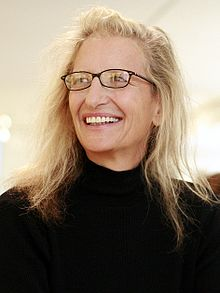

Anna-Lou "Annie" Leibovitz (born October 2, 1949) is an American portrait photographer. She photographed John Lennon on the day he was assassinated, and her work has been used on numerous album covers and magazines. She became the first woman to hold an exhibition at Washington's National Portrait Gallery in 1991.

Ansel Easton Adams
Ansel Easton Adams (February 20, 1902 – April 22, 1984) was an American landscape photographer and environmentalist. His black-and-white images of the American West, especially Yosemite National Park, have been widely reproduced on calendars, posters, books, and the internet.
Steve McCurry
Steve McCurry is an American photographer, freelancer and photojournalist. His most famous photo is of the "Afghan Girl", the girl with the piercing green eyes that periodically appears on the cover of National Geographic. McCurry has photographed many assignments for National Geographic and has been a member of Magnum since 1986.